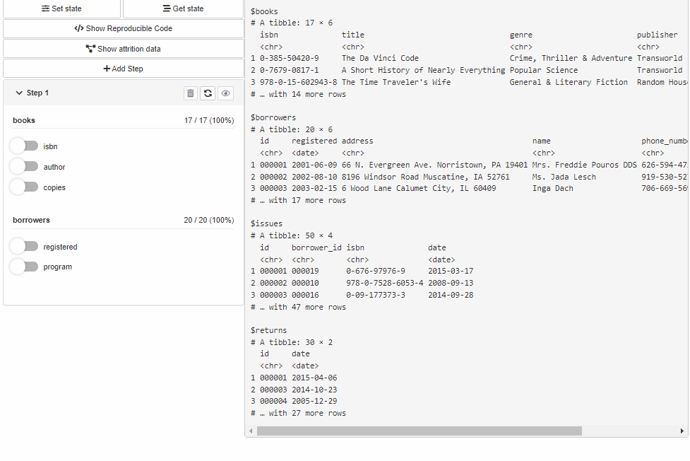
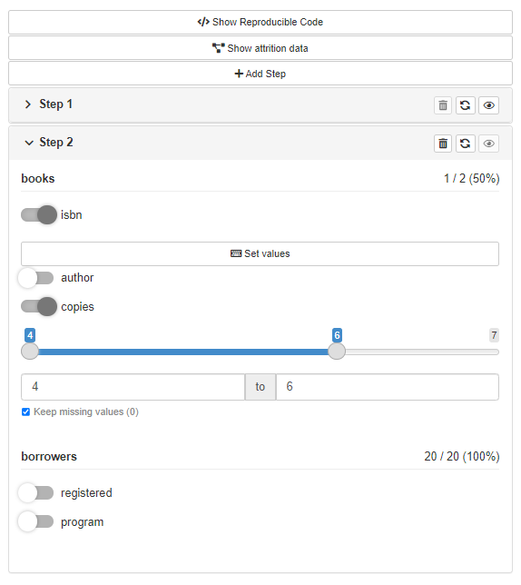

Move your cohortBuilder workflow to Shiny.



Installation
# CRAN version
install.packages("shinyCohortBuilder")
# Latest development version
remotes::install_github("https://github.com/r-world-devs/shinyCohortBuilder")Overview
With shinyCohortBuilder you can use cohortBuilder features within you shiny application.
Configure Source and Cohort filters with cohortBuilder (set value/range to NA to select all the options / the whole range, and active = FALSE to collapse filter in GUI):
librarian_source <- set_source(as.tblist(librarian))
librarian_cohort <- cohort(
librarian_source,
filter(
"discrete", id = "author", dataset = "books",
variable = "author", value = "Dan Brown",
active = FALSE
),
filter(
"range", id = "copies", dataset = "books",
variable = "copies", range = c(5, 10),
active = FALSE
),
filter(
"date_range", id = "registered", dataset = "borrowers",
variable = "registered", range = c(as.Date("2010-01-01"), Inf),
active = FALSE
)
)And apply in your application with cb_ui and cb_server:
library(shiny)
ui <- fluidPage(
sidebarLayout(
sidebarPanel(
cb_ui("librarian")
),
mainPanel()
)
)
server <- function(input, output, session) {
cb_server("librarian", librarian_cohort)
}
shinyApp(ui, server)You may listen to cohort data changes with input[[<cohort-id>-data-updated]]:
library(shiny)
ui <- fluidPage(
sidebarLayout(
sidebarPanel(
cb_ui("librarian")
),
mainPanel(
verbatimTextOutput("cohort_data")
)
)
)
server <- function(input, output, session) {
cb_server("librarian", librarian_cohort)
output$cohort_data <- renderPrint({
input[["librarian-data-updated"]]
get_data(librarian_cohort)
})
}
shinyApp(ui, server)Or run filtering panel locally what just makes your work with cohortBuilder easier:
gui(librarian_cohort)
If you’re interested in more features of shinyCohortBuilder please visit the package website.
Acknowledgement
Special thanks to:
- Kamil Wais for highlighting the need for the package and its relevance to real-world applications.
- Adam Foryś for technical support, numerous suggestions for the current and future implementation of the package.
- Paweł Kawski for indication of initial assumptions about the package based on real-world medical data.
Getting help
In a case you found any bugs, have feature request or general question please file an issue at the package Github. You may also contact the package author directly via email at krystian8207@gmail.com.